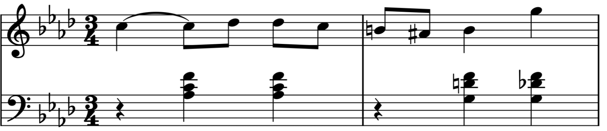
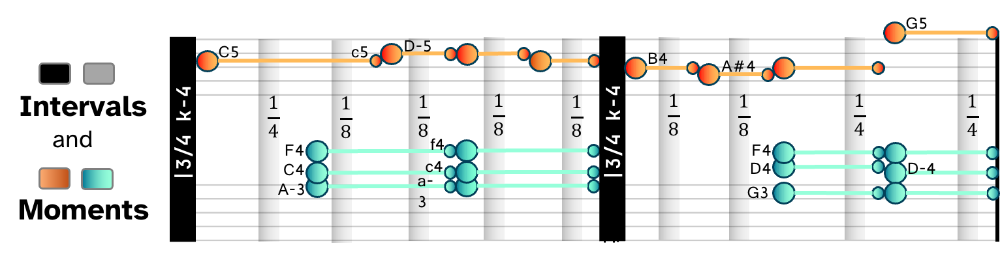
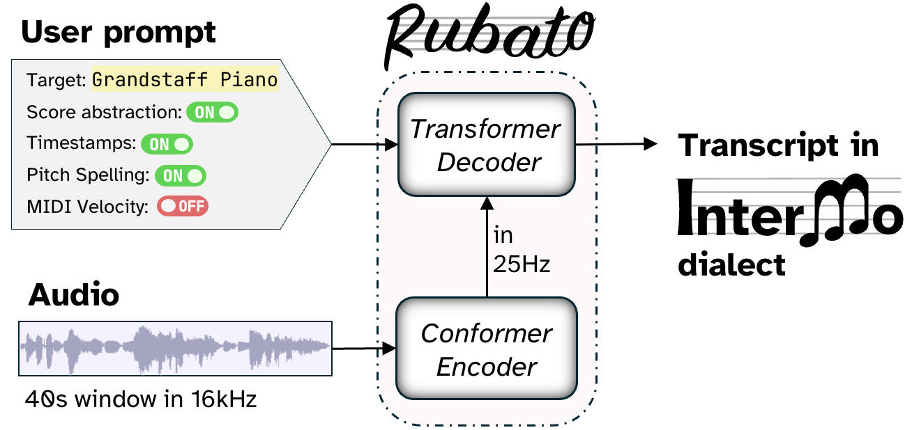

Western staff notation is one of the most sophisticated human languages. It captures melody, rhythm, phrasing, and structure in a form musicians can read, interpret, and discuss. However, generating this abstract notation — especially in a way that would support human creative interactions with audio — has been a pain point for modern AI. Existing formats are extremely verbose for AI generation. Worse, they force the musician to give up direct interaction with audio just to obtain the notational abstractions they can read.

Intervals and Moments (InterMo) merges human-readable notation and audio grounding in a single representation designed for autoregressive generation. This requires the model to decode the audio moment by moment, and enables users to follow along the sheet music and visually inspect the rubato — where a phrase leans forward, where it lingers, and where expressive timing reshapes the written pulse — directly against the recording.

Rubato is a prompt-conditioned encoder–decoder that generates InterMo sequences at different abstraction layers (time-aligned notation, performed note events, or beat/downbeat annotations). Unlike prior systems, Rubato requires no music-specific modeling: a standard speech recognition architecture, repurposed as-is, turns out to be all you need for generating readable, inspectable, audio-grounded sheet music. The result: you can follow the score in sync with the recording and feel the rubato — the expressive timing that gives each performance its character.
Citation · NeurIPS 2026
@inproceedings{tamer2026rubato,
title={Rubato: Transcribing Piano Music with Timestamps},
author={Tamer, Nazif Can and Ebert, Victoria and Yang, Guang and Smith, Noah A.},
booktitle={Advances in Neural Information Processing Systems},
year={2026}
}